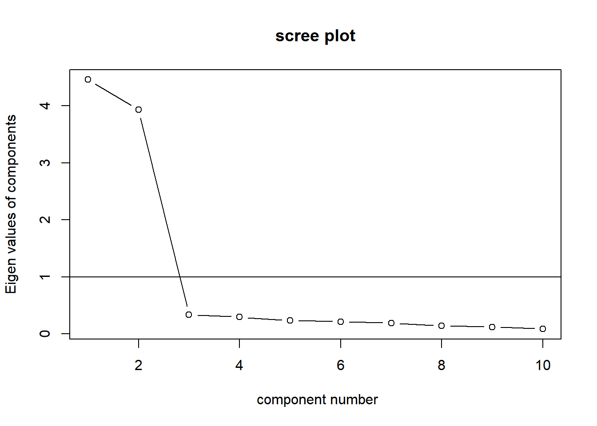
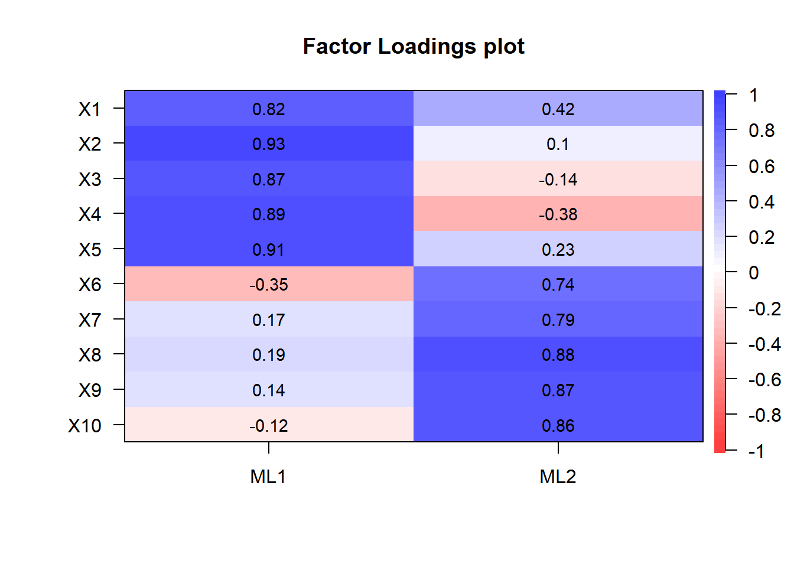
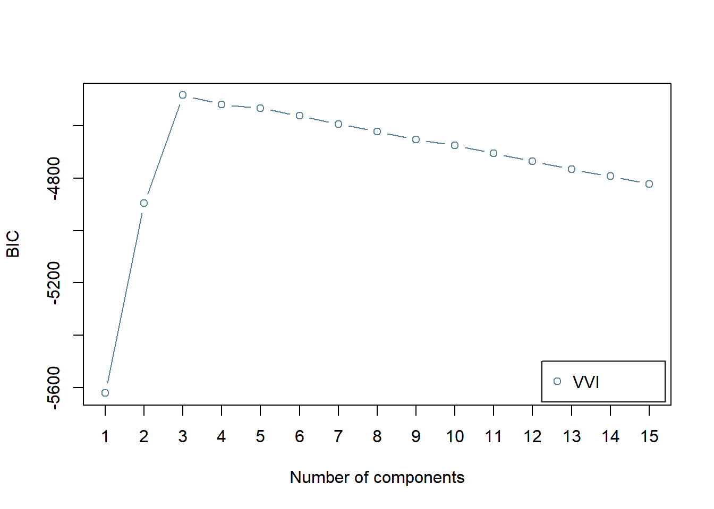
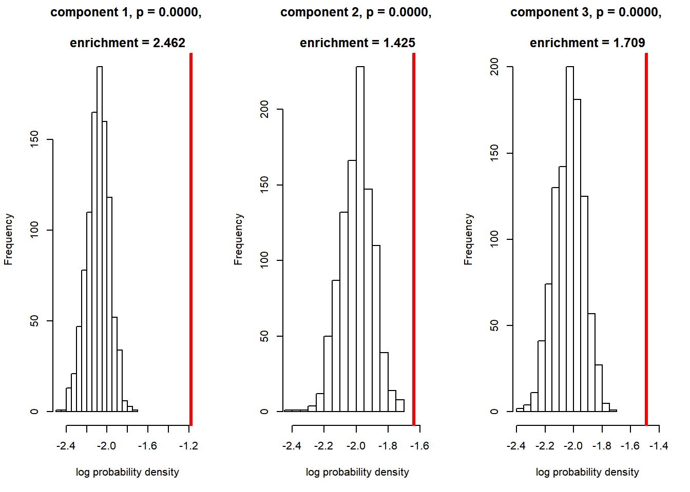
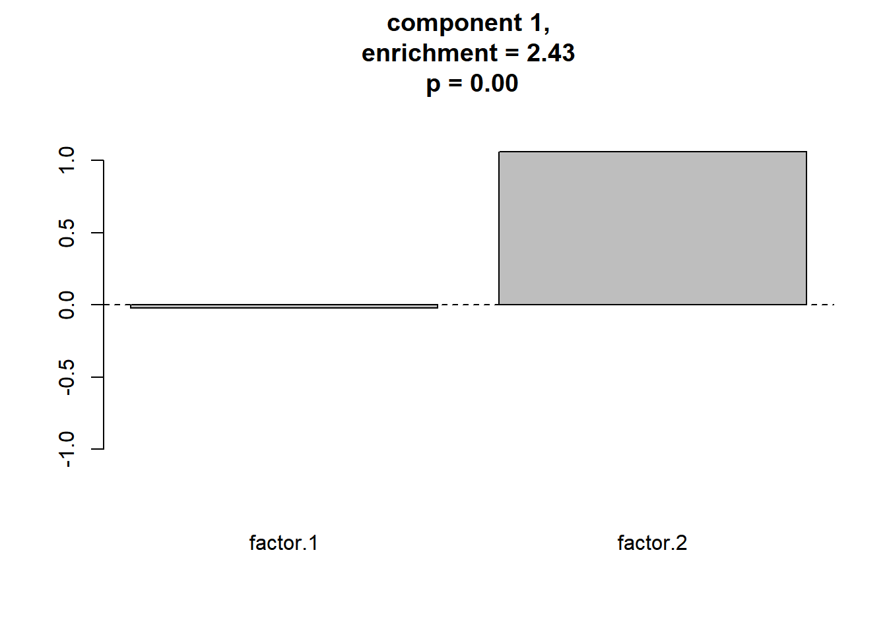
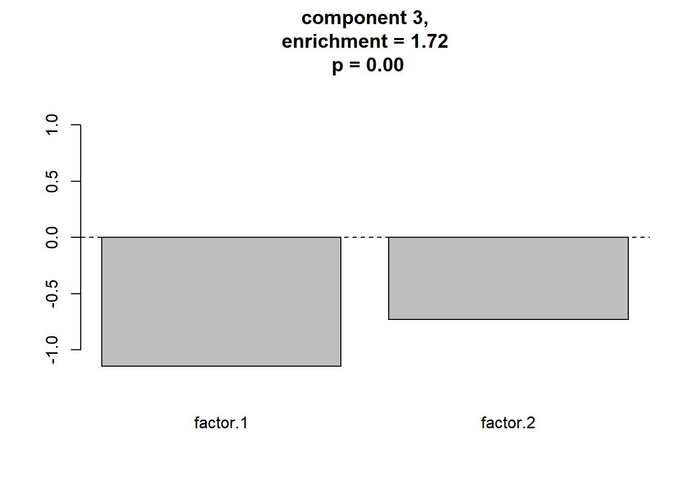
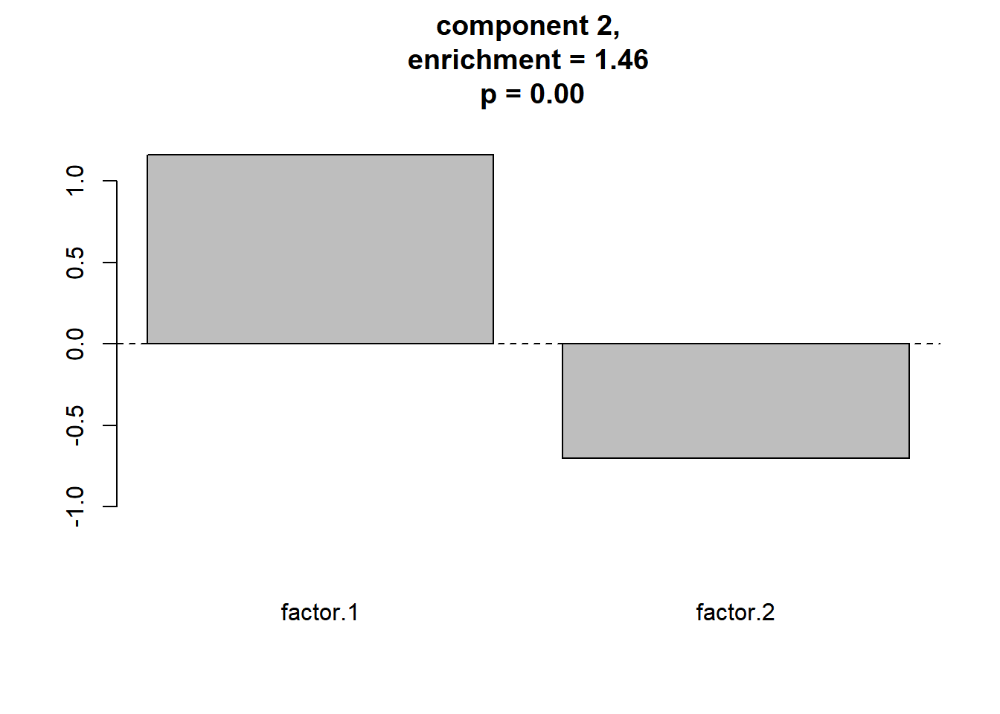

ここでは，こちらのページで紹介した関数を使って， 一通りのGerlachらの分析の解析の流れを例示します。
必要なパッケージを読み込みます。
library(psych)
library(GPArotation)
library(ks)
library(mvtnorm)
library(mclust)
library(tidyverse)こちらのページで解説した クラスター評価のための関数を読み出します。
source("functions_component_evaluation.R")こちらで作成したデータをデータフレームdf_dataに 読み出します。
df_data <- read.csv("./data_fa_GMM1.csv", header = TRUE)
head(df_data,5)| X1 | X2 | X3 | X4 | X5 | X6 | X7 | X8 | X9 | X10 |
|---|---|---|---|---|---|---|---|---|---|
| 5.369310 | 1.480908 | 0.3204278 | -1.3496938 | 1.759920 | 1.3164542 | 4.2853056 | 5.7518398 | 4.853400 | 4.436487 |
| 8.385332 | 6.966283 | 8.3258330 | 9.6991964 | 11.668750 | -0.2588496 | 0.1533774 | -0.0647089 | -1.045956 | -2.503212 |
| -3.691115 | -3.356659 | -3.6179367 | -0.0886347 | -5.675790 | 0.4823171 | -0.1155893 | 0.3087366 | -1.112879 | -4.384141 |
| 3.019875 | 6.597137 | 3.9982466 | 11.0006238 | 3.851946 | -1.6343137 | 0.3125354 | -0.1176835 | -0.420932 | -1.309458 |
| -3.313268 | -6.302669 | -5.0662851 | -10.1785300 | -9.816317 | -0.6429079 | 1.4148340 | -0.1015601 | -1.810785 | -0.808941 |
スクリープロットで因子数を決めます。
VSS.scree(df_data) このスクリープロットより，因子数は2とします。
最尤法により因子負荷を推定します。 varimax法で因子負荷の直交回転を行っています。
res_fa <- fa(r = df_data,
nfactors = 2, # 因子数
rotate = "varimax", # 回転法はvarimaxを指定
fm = "ml" # 最尤法を指定
)
cor.plot(res_fa, numbers = T)
推定した因子分析モデルから 回答者ごとの因子スコア (\(f\)) を推定します。
fsc <- factor.scores(df_data,
f = res_fa,
method = "Harman")
df_sc <- data.frame(fsc$scores)
names(df_sc) <- c("factor.1","factor.2")BICにより，コンポーネント数を選択します。
BIC <- mclustBIC(df_sc,
G = 1:15, # 候補となるコンポーネント数
modelNames = "VVI"
)
plot(BIC)
コンポーネント数として，BICの値を最大とする (MClustの仕様ではBICが大きい方が良いモデル) ， 3が選択されます。
BICで選択されたモデルの各コンポーネントの平均を求めます。
mod.GMM <- Mclust(df_sc, x = BIC)
component.centers <- t(mod.GMM$parameters$mean)各コンポーネントの平均の座標の密度と，その座標におけるヌルモデルの密度を比較し，meaningful clusterであるか否か判定します。
res_ec <- eval_component(df_sc, component.centers) 
print(res_ec)## $d.original
## [1] 0.3069254 0.1945755 0.2252260
##
## $d.null
## [1] 0.1246506 0.1365058 0.1318236
##
## $p.value
## [1] 0 0 0
##
## $enrichment
## [1] 2.462285 1.425401 1.708541meaningful clusterをプロットします。
plot_meaningful_cluster(res_ec, # 関数eval_componentの出力
component.centers,
p.threshold = 0.01,
enrichment.threshold = 1.25
)